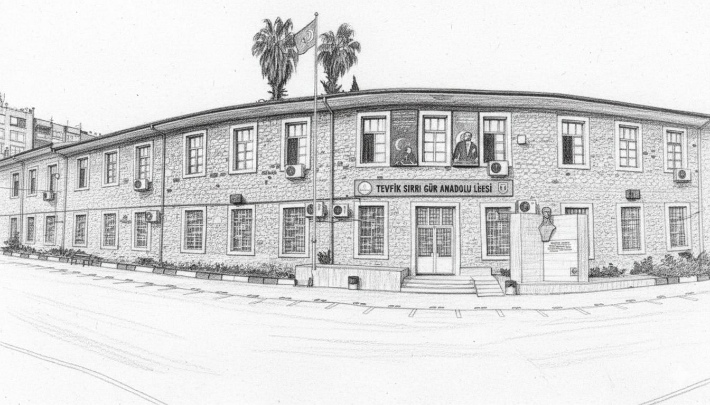

🎯 Vizyonumuz
Çağdaş eğitim anlayışı ile donanmış, bilgi ve teknoloji üreten, evrensel değerlere sahip, topluma faydalı bireyler yetiştiren örnek bir eğitim kurumu olmak.
Tevfik Sırrı Gür Lisesi - Geçmişten geleceğe uzanan eğitim yolculuğu.

Köklü bir tarihi geçmişi ve gelenekleri olan, kendini sürekli yenileyen okulumuz, bütün öğrencilerin akla ve bilime dayalı eğitim ortamında hayata hazırlandığı, yerelde ve ülkede etkin ve nitelikli bir model okuldur.
Atatürk ilke ve inkılâplarına bağlı, evrensel değerleri benimsemiş, özgüvenli ve sorumluluk sahibi bireyler yetiştirmeyi amaçlıyoruz.
Okulumuzun temel değerleri ve hedefleri.
Çağdaş eğitim anlayışı ile donanmış, bilgi ve teknoloji üreten, evrensel değerlere sahip, topluma faydalı bireyler yetiştiren örnek bir eğitim kurumu olmak.
Öğrencilerimize kaliteli eğitim vererek onları hayata ve yükseköğretime hazırlamak, ahlaki ve sosyal değerlere sahip, sorumlu bireyler olarak yetiştirmek.
Okulumuzun kuruluşu ve gelişimi.
Tevfik Sırrı Gür Lisesi, 1909 yılında eğitim hayatına başlamıştır. Kurulduğu günden bu yana binlerce öğrenciye ev sahipliği yapmış, onları hayata ve yükseköğretime hazırlamıştır. 1964 yılında binanın yapımını sağlayan Valimiz Tevfik Sırrı Gür'ün adı verilerek isim değiştirilmiştir. 2005 yılında ise Anadolu Lisesine dönüştürülmüştür.
Okulumuz mimarisi hakkında yayınlanmış akademik makaleyi aşağıdan okuyabilirsiniz.
Okulumuzun gurur duyduğu başarılar ve ödüller.
Üniversite sınavlarında yüksek başarı oranı ve prestijli üniversitelere öğrenci yerleştirme konusunda istikrarlı performans.
Sanat, müzik, tiyatro ve spor alanlarında düzenlenen etkinlikler ve kazanılan çeşitli yarışma ödülleri.
Bilim fuarları, teknoloji yarışmaları ve proje çalışmalarında elde edilen ulusal ve uluslararası dereceler.
Öğrencilerimize sunduğumuz modern eğitim altyapısı.
Zengin kitap koleksiyonu ve çalışma alanları ile öğrencilerimizin hizmetinde modern bir kütüphane.
Son teknoloji donanımlı bilgisayar laboratuvarları ile bilişim teknolojileri eğitimi.
Fizik, kimya ve biyoloji laboratuvarlarında uygulamalı fen bilimleri eğitimi.
Kapalı spor salonu, basketbol ve voleybol sahaları ile çeşitli spor aktiviteleri imkanı.
Hijyenik koşullarda hizmet veren modern kantin ve sosyal alanlar.
Etkinlikler, konferanslar ve seminerler için geniş kapasiteli modern konferans salonu.
Okulumuzdan mezun olan ve çeşitli alanlarda başarılı olan eski öğrencilerimiz.
Okulumuz, yıllar boyunca toplumun çeşitli alanlarında söz sahibi olan değerli mezunlar yetiştirmiştir. Akademisyenler, doktorlar, mühendisler, sanatçılar, sporcular ve iş insanları olarak farklı sektörlerde başarılı kariyerlere sahip mezunlarımız, okulumuzun gururudur.
Derneğimiz, mezunlarımızı bir araya getirmek, aralarındaki bağı güçlendirmek ve okulumuzun geleceğine katkıda bulunmalarını sağlamak için çeşitli etkinlikler düzenlemektedir.
Tevfik Sırrı Gür Lisesi ile iletişime geçin.
Tevfik Sırrı Gür Lisesi
[Okul Adresi]
[İlçe / İl]
[Posta Kodu]
Telefon: (0XXX) XXX XX XX
Fax: (0XXX) XXX XX XX
E-posta: info@tsgl.k12.tr